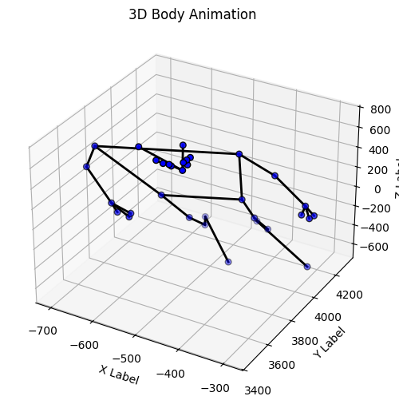
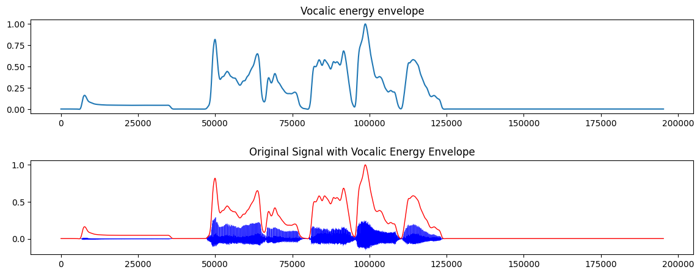

import cv2 #opencvimport math #basic operationsimport numpy as np #basic operationsimport pandas as pd #data wranglingimport csv #csv savingimport os #some basic functions for inspecting folder structure etc.from os import listdirfrom os.path import isfile, joinimport glob as globimport moviepy.editor as mopimport matplotlib.pyplot as pltfrom mpl_toolkits.mplot3d import Axes3Dfrom matplotlib.animation import FuncAnimationimport tkinter # GUI toolkit to open and save filesfrom tkinter import filedialog, messagebox # GUI toolkit to open and save filesfrom scipy.signal import butter, filtfilt, iirnotchimport librosaimport librosa.displayimport tempfileimport shutilimport tqdmprint("Everything imported successfully")
Everything imported successfully
1. The User Selects their Own Files with a GUI pop-up
import tkinter as tkfrom tkinter import filedialog, messagebox# Create the GUI windowroot = tk.Tk()root.attributes('-topmost', True)root.iconify()# Pre-announcement message box with bigger fontmessagebox.showinfo("File Selection", "Please select your 2D Videos with annotated 2D tracking. Here we are working with 3 videos in the .mp4 format ", icon='info')# Ask the user to select the Files that will be part of the Multimodal Animationvideos_input_2D = filedialog.askopenfilename(title="Select your 2D Videos with the annotated 2D tracking", filetypes=[("Video Files", "*.mp4")], multiple='True')# Convert the tuple returned by askopenfilenames() to a list because we have multipe files videos_input_2D =list(videos_input_2D)print('You have selected the following 2D Videos: '+str(videos_input_2D))messagebox.showinfo("File Selection", "Please select your 3D Motion Tracking file. This is .csv file with xyz coordinates for each landmark", icon='info')MT_3D_input = filedialog.askopenfilename(title="Select your 3D Motion Tracking file (xyz)", filetypes=[("CSV Files", "*.csv")])print('You have selected the following 3D Motion Tracking file: '+str(MT_3D_input))messagebox.showinfo("File Selection", "Please select your audio file. This is a .wav file", icon='info')audio_input = filedialog.askopenfilename(title="Select your audio file corresponding to the video", filetypes=[("Audio Files", "*.wav")])print('You have selected the following audio file: '+str(audio_input))messagebox.showinfo("File Selection", "Please select your PLUX file. This is a .csv file extracted from LSL", icon='info')PLUX_input = filedialog.askopenfilename(title="Select your PLUX file containing physiological data", filetypes=[("CSV Files", "*.csv")])print('You have selected the following PLUX file: '+str(PLUX_input))root.destroy()
You have selected the following 2D Videos: ['F:/Mobile-Multimodal-Lab/3_MOTION_TRACKING/3_freemocap/marker_MULTIPLEpairs/P1/NoVision_Movement/trial_4/annotated_videos/T1_experiment_Video_P1_NoVision_Movement_4_StartParticipantSinging_NoVision_Movement_4_EndParticipantSinging_clipped_cam1_mediapipe.mp4', 'F:/Mobile-Multimodal-Lab/3_MOTION_TRACKING/3_freemocap/marker_MULTIPLEpairs/P1/NoVision_Movement/trial_4/annotated_videos/T1_experiment_Video_P1_NoVision_Movement_4_StartParticipantSinging_NoVision_Movement_4_EndParticipantSinging_clipped_cam2_mediapipe.mp4', 'F:/Mobile-Multimodal-Lab/3_MOTION_TRACKING/3_freemocap/marker_MULTIPLEpairs/P1/NoVision_Movement/trial_4/annotated_videos/T1_experiment_Video_P1_NoVision_Movement_4_StartParticipantSinging_NoVision_Movement_4_EndParticipantSinging_clipped_cam3_mediapipe.mp4']
You have selected the following 3D Motion Tracking file: F:/Mobile-Multimodal-Lab/3_MOTION_TRACKING/3_freemocap/marker_MULTIPLEpairs/P1/NoVision_Movement/trial_4/output_data/mediapipe_body_3d_xyz.csv
You have selected the following audio file: F:/Mobile-Multimodal-Lab/2_PREPROCESSING/1_XDF_PROCESSING/data_processed/T1/marker_MULTIPLEpairs/T1_experiment_Mic_P1_NoVision_Movement_4_StartParticipantSinging_NoVision_Movement_4_EndParticipantSinging_denoised.wav
You have selected the following PLUX file: F:/Mobile-Multimodal-Lab/2_PREPROCESSING/1_XDF_PROCESSING/data_processed/T1/marker_MULTIPLEpairs/T1_experiment_PLUX_P1_NoVision_Movement_4_StartParticipantSinging_NoVision_Movement_4_EndParticipantSinging.csv
2. Create a 3D Animation from the MT_3D_input
MT_tracking = pd.read_csv(MT_3D_input)# Create a figure and axisfig = plt.figure(figsize=(10, 6))ax = fig.add_subplot(111, projection='3d')# Define the number of framesnum_frames =len(MT_tracking)# Define the scatter plotscatter = ax.scatter([], [], [], marker='o')# Get the FPS and frame count of your 2D video to ensure that the 3D animation has the same durationcap = cv2.VideoCapture(videos_input_2D[0]) # here only using the first one because all videos have the same durationfps = cap.get(cv2.CAP_PROP_FPS)frame_count_2D =int(cap.get(cv2.CAP_PROP_FRAME_COUNT))duration_2D = frame_count_2D / fpscap.release()# Ensure your 3D data matches the duration of the 2D videosnum_frames =int(duration_2D * fps)MT_tracking = MT_tracking.iloc[:num_frames]# Defyining Connectsion between landmarks to draw lines fro Example . #Change according to the landmarks in your dataconnections = [# Head and torso ('nose', 'left_eye_inner'), ('nose', 'right_eye_inner'), ('left_eye_inner', 'left_eye'), ('left_eye', 'left_eye_outer'), ('right_eye_inner', 'right_eye'), ('right_eye', 'right_eye_outer'), ('nose', 'left_ear'), ('nose', 'right_ear'),# Upper body (shoulders, arms) ('left_shoulder', 'right_shoulder'), ('left_shoulder', 'left_elbow'), ('left_elbow', 'left_wrist'), ('right_shoulder', 'right_elbow'), ('right_elbow', 'right_wrist'),# Lower body (hips, legs) ('left_shoulder', 'left_hip'), ('right_shoulder', 'right_hip'), ('left_hip', 'right_hip'), ('left_hip', 'left_knee'), ('left_knee', 'left_ankle'), ('right_hip', 'right_knee'), ('right_knee', 'right_ankle'),# Feet (toes and heel) ('left_ankle', 'left_heel'), ('right_ankle', 'right_heel'), ('left_heel', 'left_foot_index'), ('right_heel', 'right_foot_index'),# Optional: Left and right wrists to fingers (if available) ('left_wrist', 'left_pinky'), ('left_wrist', 'left_index'), ('left_wrist', 'left_thumb'), ('right_wrist', 'right_pinky'), ('right_wrist', 'right_index'), ('right_wrist', 'right_thumb')]# Calculate dynamic axis limits based on actual data rangesx_min, x_max = MT_tracking.filter(like='_x').min().min(), MT_tracking.filter(like='_x').max().max()y_min, y_max = MT_tracking.filter(like='_y').min().min(), MT_tracking.filter(like='_y').max().max()z_min, z_max = MT_tracking.filter(like='_z').min().min(), MT_tracking.filter(like='_z').max().max()# Enhanced Update function for animationdef update(frame): ax.clear() ax.set_xlabel('X Label') ax.set_ylabel('Y Label') ax.set_zlabel('Z Label') ax.set_title('3D Body Animation')# Set the limits dynamically ax.set_xlim3d(x_min, x_max) ax.set_ylim3d(y_min, y_max) ax.set_zlim3d(z_min, z_max)# Extract the X, Y, and Z coordinates for the current frame frame_data = MT_tracking.iloc[frame] x = frame_data.filter(like='_x') y = frame_data.filter(like='_y') z = frame_data.filter(like='_z')# Plot the dots (landmarks) scatter = ax.scatter(x, y, z, marker='o', color='blue', s=30, edgecolor='k') # s=30 for larger dots# Draw lines to connect the landmarksfor part1, part2 in connections:# Get the coordinates for each pair of landmarks to connect x_line = [frame_data[part1 +'_x'], frame_data[part2 +'_x']] y_line = [frame_data[part1 +'_y'], frame_data[part2 +'_y']] z_line = [frame_data[part1 +'_z'], frame_data[part2 +'_z']] ax.plot(x_line, y_line, z_line, color='black', linewidth=2) # Black lines with thickness 2return scatter,# Create the animationani = FuncAnimation(fig, update, frames=num_frames, interval=1000/ fps)# Save the animationoutput_folder = os.path.abspath('./animation_videos_temp_3')output_file = os.path.join(output_folder, '3d_animation.mp4')os.makedirs(output_folder, exist_ok=True)ani.save(output_file, writer='ffmpeg', fps=fps)print('Saved the enhanced 3D animation!')#This will be our 3D input vido for the multimodal animationanimation_input_3D = output_file
Saved the enhanced 3D animation!

4. Extract Amplitude Envelope and Plot Audio Signal
# Define the bandpass filterdef butter_bandpass(lowcut, highcut, fs, order=2): nyquist =0.5* fs low = lowcut / nyquist high = highcut / nyquist b, a = butter(order, [low, high], btype='band')return b, adef butter_bandpass_filtfilt(data, lowcut, highcut, fs, order=2): b, a = butter_bandpass(lowcut, highcut, fs, order=order) y = filtfilt(b, a, data)return y# Define the lowpass filterdef butter_lowpass(cutoff, fs, order=2): nyquist =0.5* fs normal_cutoff = cutoff / nyquist b, a = butter(order, normal_cutoff, btype='low')return b, adef butter_lowpass_filtfilt(data, cutoff, fs, order=2): b, a = butter_lowpass(cutoff, fs, order=order) y = filtfilt(b, a, data)return y# Function to extract amplitude envelopedef amp_envelope(audiofilename):# load audio with librosa audio, sr = librosa.load(audiofilename, sr=None)# Bandpass filter 400-4000Hz data = butter_bandpass_filtfilt(audio, 400, 4000, sr, order=2)# Lowpass filter 10Hz data = butter_lowpass_filtfilt(np.abs(data), 10, sr, order=2)# scale from 0 to 1 data = (data - np.min(data)) / (np.max(data) - np.min(data))return data, sr# Get the amplitude envelopeampv, sr = amp_envelope(audio_input)# Plot the filtered signal and the original signalplt.figure(figsize=(14, 5))plt.subplot(2, 1, 1)plt.plot(ampv)plt.title('Vocalic energy envelope')# Extract and plot the original signal with the amplitude enveloperawaudio, sr = librosa.load(audio_input, sr=None)plt.subplot(2, 1, 2)plt.plot(rawaudio, label ='Original Signal', color='blue', linewidth=0.2)plt.plot(ampv, label='Amplitude Envelope', color='red', linewidth=1)plt.title('Original Signal with Vocalic Energy Envelope')plt.subplots_adjust(hspace=0.5) # Increase the space between subplots to move title downplt.show()# Create a Audio DataFrame with time (in secs, starting from 0) raw audio and amplitude envelope for later useaudio_df = pd.DataFrame({'time': np.arange(len(ampv)) / sr, 'audio': rawaudio, 'envelope': ampv})audio_df.head()

time
audio
envelope
0
0.000000
-0.000031
0.003748
1
0.000063
-0.000031
0.003749
2
0.000125
-0.000031
0.003749
3
0.000188
-0.000031
0.003749
4
0.000250
-0.000031
0.003749
5. Filter and Plot Physiological Signal: EMG, ECG and RESP
PLUX_data = pd.read_csv(PLUX_input)print(PLUX_data.head()) # To see the first few rows of the DataFrameprint(PLUX_data.columns) # To list the column namessampling_rate =1000# Sampling rate of 1000 Hz for our PLUX stream ## ---------------- 1. EMG DATA PROCESSING ---------------- ## # Define Butterworth filter functiondef butter_filter(data, cutoff, fs, order=4, filter_type='low'): nyquist =0.5* fs # Nyquist frequency normal_cutoff = cutoff / nyquist b, a = butter(order, normal_cutoff, btype=filter_type, analog=False)# Apply zero-phase filtering with padding to prevent edge effects padded_data = np.pad(data, (1000, 1000), 'edge') filtered_data = filtfilt(b, a, padded_data)return filtered_data[1000:-1000] # Remove padding# High-pass filter, rectify, and then low-pass filter EMG signalsdef process_emg(emg_signal, fs, cutoff_high, cutoff_low):# Apply high-pass filter high_passed = butter_filter(emg_signal, cutoff_high, fs, order=4, filter_type='high')# Rectify (full-wave rectification) rectified = np.abs(high_passed)# Apply low-pass filter low_passed = butter_filter(rectified, cutoff_low, fs, order=4, filter_type='low')return low_passed# Your EMG data and sampling rateEMG_bicep = PLUX_data.iloc[:, 3].valuesEMG_tricep = PLUX_data.iloc[:, 4].valuessampling_rate =1000# Replace with your actual sampling rate# Process the EMG data for each muscleEMG_bicep_processed = process_emg(EMG_bicep, sampling_rate, 2, 20) # 2 Hz high-pass, 20 Hz low-passEMG_tricep_processed = process_emg(EMG_tricep, sampling_rate, 2, 20) # 2 Hz high-pass, 20 Hz low-pass# Compute frequency spectra for EMG bicepfreqs_bicep = np.fft.rfftfreq(len(EMG_bicep), d=1/sampling_rate)fft_bicep = np.abs(np.fft.rfft(EMG_bicep))fft_bicep_processed = np.abs(np.fft.rfft(EMG_bicep_processed))# Compute frequency spectra for EMG tricepfreqs_tricep = np.fft.rfftfreq(len(EMG_tricep), d=1/sampling_rate)fft_tricep = np.abs(np.fft.rfft(EMG_tricep))fft_tricep_processed = np.abs(np.fft.rfft(EMG_tricep_processed))# Visualization: Create a figure with 4 subplotsplt.figure(figsize=(12, 12))# Subplot 1: Time-domain EMG data before filteringplt.subplot(4, 1, 1)plt.plot(PLUX_data['LSL_Time'], EMG_bicep, label='Bicep (Unfiltered)', color='blue', linewidth=0.5)plt.plot(PLUX_data['LSL_Time'], EMG_tricep, label='Tricep (Unfiltered)', color='red', linewidth=0.5)plt.legend()plt.xlabel('LSL Time (ms)')plt.ylabel('Amplitude')plt.title('EMG Data Unfiltered: Bicep and Tricep')plt.grid(True)# Subplot 2: Time-domain EMG data after filteringplt.subplot(4, 1, 2)plt.plot(PLUX_data['LSL_Time'], EMG_bicep_processed, label='Bicep (Filtered)', color='blue', linewidth=0.5)plt.plot(PLUX_data['LSL_Time'], EMG_tricep_processed, label='Tricep (Filtered)', color='red', linewidth=0.5)plt.legend()plt.xlabel('LSL Time (ms)')plt.ylabel('Amplitude')plt.title('EMG Data Filtered: Bicep and Tricep')plt.grid(True)# Subplot 3: Frequency spectrum for Bicep EMGplt.subplot(4, 1, 3)plt.plot(freqs_bicep, fft_bicep, label='Bicep Unfiltered', color='blue', linewidth=0.5)plt.plot(freqs_bicep, fft_bicep_processed, label='Bicep Filtered', color='red', linewidth=0.5)plt.xlim(0, 250) # Adjust frequency range as neededplt.ylim(0, max(fft_bicep)) # Adjust y-axis limits as neededplt.legend()plt.xlabel('Frequency (Hz)')plt.ylabel('Magnitude')plt.title('Frequency Spectrum before and after Filtering - Bicep EMG')plt.grid(True)# Subplot 4: Frequency spectrum for Tricep EMGplt.subplot(4, 1, 4)plt.plot(freqs_tricep, fft_tricep, label='Tricep Unfiltered', color='blue', linewidth=0.5)plt.plot(freqs_tricep, fft_tricep_processed, label='Tricep Filtered', color='red', linewidth=0.5)plt.xlim(0, 250)plt.ylim(0, max(fft_tricep)) # Adjust y-axis limits as neededplt.legend()plt.xlabel('Frequency (Hz)')plt.ylabel('Magnitude')plt.title('Frequency Spectrum before and after Filtering- Tricep EMG')plt.grid(True)plt.tight_layout()plt.show()# Create a new ECG DataFrame with time (in secs) and the processed EMG signal for Bicep and TricepEMG_df = pd.DataFrame({'time': np.arange(len(EMG_bicep)) / sampling_rate, 'emg_bicep': EMG_bicep_processed, 'emg_tricep': EMG_tricep_processed})## ---------------- 2. ECG DATA PROCESSING ---------------- ### Define the notch filter function to remove powerline interferencedef notch_filter(signal, fs, notch_freq=50, quality_factor=30): b, a = iirnotch(notch_freq / (fs /2), quality_factor) filtered_signal = filtfilt(b, a, signal)return filtered_signal# Updated ECG processing function with notch filterdef process_ecg(ecg_signal, fs, cutoff_high, cutoff_low, notch_freq, quality_factor):# Apply high-pass filter high_passed = butter_filter(ecg_signal, cutoff_high, fs, order=4, filter_type='high')# Apply low-pass filter low_passed = butter_filter(high_passed, cutoff_low, fs, order=4, filter_type='low')# Apply notch filter filtered = notch_filter(low_passed, fs, notch_freq, quality_factor)return filtered# Your ECG data and sampling rateECG = PLUX_data.iloc[:,2]# Process the ECG signal with the notch filterECG_processed = process_ecg(ECG, sampling_rate, 0.5, 40, 50, 30) # 0.5 Hz high-pass, 40 Hz low-pass, 50 Hz notch, 30 Q-factor# Visualtiation with matplotlib: ECG data before and after filtering + Furier Transform frequency (3 subplots)plt.figure(figsize=(12, 8))plt.subplot(3, 1, 1)plt.plot(PLUX_data['LSL_Time'], ECG, label='ECG (unfiltered)', color='blue', linewidth=0.5)plt.legend()plt.xlabel('LSL Time (ms)')plt.title('ECG Data Unfiltered')plt.subplot(3, 1, 2)plt.plot(PLUX_data['LSL_Time'], ECG_processed, label='ECG (filtered with Notch)', color='green', linewidth=0.5)plt.legend()plt.xlabel('LSL Time (ms)')plt.title('ECG Data Filtered with Notch Filter')# Optional: Plot frequency spectrum to visualize the effect of the notch filterfreqs = np.fft.rfftfreq(len(ECG), d=1/sampling_rate)fft_ecg = np.abs(np.fft.rfft(ECG))fft_ecg_processed = np.abs(np.fft.rfft(ECG_processed))plt.subplot(3, 1, 3)plt.plot(freqs, fft_ecg, label='Original ECG Spectrum', color='blue', linewidth=0.5)plt.plot(freqs, fft_ecg_processed, label='Filtered ECG Spectrum', color='green', linewidth=0.5)plt.xlim(0, 100) # Focus on frequencies up to 100 Hzplt.legend()plt.xlabel('Frequency (Hz)')plt.title('Frequency Spectrum Before and After Bandpass + Notch Filter')plt.tight_layout()plt.show()## Create a new ECG DataFrame with time (in secs) and the processed ECG signalECG_df = pd.DataFrame({'time': np.arange(len(ECG_processed))/ sampling_rate, 'ecg': ECG_processed})## ---------------- 3. RESPIRATION DATA PROCESSING ---------------- ##RSP = PLUX_data.iloc[:,5]# visualtiation with matplotlib: Unfiltered respiration dataplt.figure(figsize=(12, 6))plt.plot(PLUX_data['LSL_Time'], RSP, label='Respiration (unfiltered)', color='blue', linewidth=0.5)plt.legend()plt.xlabel('LSL Time (ms seconds)')plt.title('Respiration Data Unfiltered')plt.show()# Create a new Respiration DataFrame with time (in secs) and the raw respiration signalRESP_df = pd.DataFrame({'time': np.arange(len(RSP)) / sampling_rate, 'resp': RSP})print(RESP_df.head())
# what is the window size in secondswindow =4def plot_multimodal(audio, emg, ecg, resp, midpoint, window=4):# Temporary folder for saving the plot tempfolder = tempfile.mkdtemp()# Create 4 subplots for the different data streams fig, ax = plt.subplots(4, 1, figsize=(14, 16)) # 4 rows (Audio, EMG, ECG, RESP)# Define the time window for all plots start =-window /2 end = window /2# Create local time variables adjusted for the current midpoint audio_time = audio['time'] - midpoint emg_time = emg['time'] - midpoint ecg_time = ecg['time'] - midpoint resp_time = resp['time'] - midpoint# Filter the data to the time window audio_mask = (audio_time >= start) & (audio_time <= end) emg_mask = (emg_time >= start) & (emg_time <= end) ecg_mask = (ecg_time >= start) & (ecg_time <= end) resp_mask = (resp_time >= start) & (resp_time <= end)# Plot 1: Audio envelope ax[0].plot(audio_time.loc[audio_mask], audio['audio'].loc[audio_mask], label='Raw Audio', linewidth=0.5) ax[0].plot(audio_time.loc[audio_mask], audio['envelope'].loc[audio_mask], label='Envelope', linewidth=1.5) ax[0].set_xlim(start, end) ax[0].set_ylim(min(audio['audio']), max(audio['envelope'])) # Adjust as needed based on your signal ax[0].legend(prop={'size': 18}) ax[0].set_ylabel('Amplitude')# Plot 2: Filtered EMG signal ax[1].plot(emg_time.loc[emg_mask], emg['emg_bicep'].loc[emg_mask], label='EMG Bicep', color='green', linewidth=1) ax[1].plot(emg_time.loc[emg_mask], emg['emg_tricep'].loc[emg_mask], label='EMG Tricep', color='red', linewidth=1) ax[1].set_xlim(start, end) ax[1].set_ylim(min(min(emg['emg_bicep']), min(emg['emg_tricep'])), max(max(emg['emg_bicep']), max(emg['emg_tricep']))) ax[1].legend(prop={'size': 18}) ax[1].set_ylabel('Amplitude')# Plot 3: Filtered ECG signal ax[2].plot(ecg_time.loc[ecg_mask], ecg['ecg'].loc[ecg_mask], label='ECG Signal', color='blue', linewidth=1) ax[2].set_xlim(start, end) ax[2].set_ylim(min(ecg['ecg']), max(ecg['ecg'])) # Adjust as needed based on your signal ax[2].legend(prop={'size': 18}) ax[2].set_ylabel('Amplitude')# Plot 4: Respiratory signal ax[3].plot(resp_time.loc[resp_mask], resp['resp'].loc[resp_mask], label='Respiration', color='orange', linewidth=1) ax[3].set_xlim(start, end) ax[3].set_ylim(min(resp['resp']), max(resp['resp'])) # Adjust as needed based on your signal ax[3].legend(prop={'size': 18}) ax[3].set_ylabel('Respiration') ax[3].set_xlabel('Time (s)')#Apply a vertical line at time 0 for all subplots ax[0].axvline(x=0, color='r', linestyle='--', linewidth=4, alpha=0.8) ax[1].axvline(x=0, color='r', linestyle='--', linewidth=4, alpha=0.8) ax[2].axvline(x=0, color='r', linestyle='--', linewidth=4, alpha=0.8) ax[3].axvline(x=0, color='r', linestyle='--', linewidth=4, alpha=0.8)# Apply tight layout and save plot plt.tight_layout() tpf = tempfolder +'/tempfig.png' plt.savefig(tpf) plt.close()# Load and return the image as a frame for the video img = cv2.imread(tpf) shutil.rmtree(tempfolder)#show image in the terminalreturn imgdef process_video_with_multimodal(videos_2D, animation_3D, audio, emg, ecg, resp, output_filename):# Open the three 2D videos captures_2D = [cv2.VideoCapture(vf) for vf in videos_2D]# Open the 3D animation video capture_3D = cv2.VideoCapture(animation_3D)# Check if all videos opened successfullyifnotall([cap.isOpened() for cap in captures_2D]) ornot capture_3D.isOpened():print("Error opening one or more video files.")return# Get video properties of 2D videos (assuming all videos have the same properties) fps = captures_2D[0].get(cv2.CAP_PROP_FPS) frame_count =int(captures_2D[0].get(cv2.CAP_PROP_FRAME_COUNT)) frame_width =int(captures_2D[0].get(cv2.CAP_PROP_FRAME_WIDTH)) frame_height =int(captures_2D[0].get(cv2.CAP_PROP_FRAME_HEIGHT))# Get properties of the 3D animation video frame_width_3D =int(capture_3D.get(cv2.CAP_PROP_FRAME_WIDTH)) frame_height_3D =int(capture_3D.get(cv2.CAP_PROP_FRAME_HEIGHT)) fps_3D = capture_3D.get(cv2.CAP_PROP_FPS) frame_count_3D =int(capture_3D.get(cv2.CAP_PROP_FRAME_COUNT))# Ensure synchronization (assuming same fps and frame count)if fps != fps_3D or frame_count != frame_count_3D:print("Mismatch in FPS or frame count between videos.")return# Calculate dimensions for the video grid# Top: 3 videos (side by side) video_top_width = frame_width *3# video_top_height = frame_height - (frame_height // 3) # Reduce height by 1/3 video_top_height = frame_height # Keep the same height# Set the desired width of the 3D animation (e.g., half of video_top_width) animation_width =int(video_top_width) # Half the width of the top videos# Maintain aspect ratio scale_factor = animation_width / frame_width_3D animation_height =int(frame_height_3D * scale_factor)# Video combined height video_height = video_top_height + animation_height # Top videos + 3D animation# Create a sample plot to determine plot height tempfolder = tempfile.mkdtemp() fig, ax = plt.subplots(4, 1, figsize=(14, 16)) plt.tight_layout() tpf = tempfolder +'/tempfig.png' plt.savefig(tpf) plt.close() plot_img = cv2.imread(tpf) plot_height, plot_width, _ = plot_img.shape shutil.rmtree(tempfolder)# Total output frame dimensions total_width = video_top_width total_height = video_height + plot_heightprint(f"Total video dimensions: {total_width}x{total_height}")# Set up video writer for the output video fourcc = cv2.VideoWriter_fourcc(*'mp4v') out = cv2.VideoWriter(output_filename, fourcc, fps, (total_width, total_height))ifnot out.isOpened():print("Error: VideoWriter not initialized correctly.")return frame_number =0for i in tqdm.tqdm(range(frame_count)):# Read frames from the three 2D videos frames_2D = []for cap in captures_2D: ret, frame = cap.read()ifnot ret:break frames_2D.append(frame)iflen(frames_2D) !=len(captures_2D):break# Not enough frames# Read frame from the 3D animation video ret_3D, frame_3D = capture_3D.read()ifnot ret_3D:break# Resize 2D frames if needed resized_frames_2D = [cv2.resize(f, (frame_width, frame_height)) for f in frames_2D]# Arrange the 3 2D videos side by side (top) video_top = np.hstack(resized_frames_2D)# Resize the 3D animation frame frame_3D_resized = cv2.resize(frame_3D, (animation_width, animation_height))# Create a blank image for the bottom part (same width as video_top) bottom_image = np.zeros((animation_height, video_top_width, 3), dtype=np.uint8)# Center the 3D animation in the bottom_image x_offset = (video_top_width - animation_width) //2 y_offset =0# Top of bottom_image bottom_image[y_offset:y_offset+animation_height, x_offset:x_offset+animation_width] = frame_3D_resized# Combine top and bottom images vertically video_combined = np.vstack((video_top, bottom_image))# Generate the multimodal plot for the current window midpoint = frame_number / fps multimodal_img = plot_multimodal(audio, emg, ecg, resp, midpoint)# Resize the plot to match the width of the video_combined multimodal_img = cv2.resize(multimodal_img, (total_width, plot_height))# Combine the video_combined and the plot vertically combined_frame = np.vstack((video_combined, multimodal_img))# Write the combined frame to the output video out.write(combined_frame.astype(np.uint8)) frame_number +=1##show the frame (otpional)#cv2.imshow('Frame', combined_frame)# Release video objectsfor cap in captures_2D: cap.release() capture_3D.release() out.release() cv2.destroyAllWindows()animation_input_3D = output_fileoutput_folder = os.path.abspath('./animation_videos_temp_x')output_filename = os.path.join(output_folder, 'multimodal_video_5.mp4')#make sure the folder existsos.makedirs(output_folder, exist_ok=True)process_video_with_multimodal(videos_input_2D, animation_input_3D, audio_df, EMG_df, ECG_df, RESP_df, output_filename)
Total video dimensions: 1620x3532
100%|██████████| 681/681 [07:31<00:00, 1.51it/s]
print('audio start')print(audio_df.head())print('audio end')print(audio_df.tail())print('emg start')print(EMG_df.head())print('emg end')print(EMG_df.tail())print('ecg start')print(ECG_df.head())print('ecg end')print(ECG_df.tail())print('resp start')print(RESP_df.head())print('resp end')print(RESP_df.tail())# Open one of your videoscap = cv2.VideoCapture(videos_input_2D[0])fps = cap.get(cv2.CAP_PROP_FPS)frame_count =int(cap.get(cv2.CAP_PROP_FRAME_COUNT))video_duration = frame_count / fpscap.release()print(f"Video Duration: {video_duration} seconds")
# Get video properties of 2D videos (assuming all videos have the same properties)captures_2D = [cv2.VideoCapture(vf) for vf in videos_input_2D]fps = captures_2D[0].get(cv2.CAP_PROP_FPS)frame_count =int(captures_2D[0].get(cv2.CAP_PROP_FRAME_COUNT))frame_width =int(captures_2D[0].get(cv2.CAP_PROP_FRAME_WIDTH))frame_height =int(captures_2D[0].get(cv2.CAP_PROP_FRAME_HEIGHT))print(frame_height)